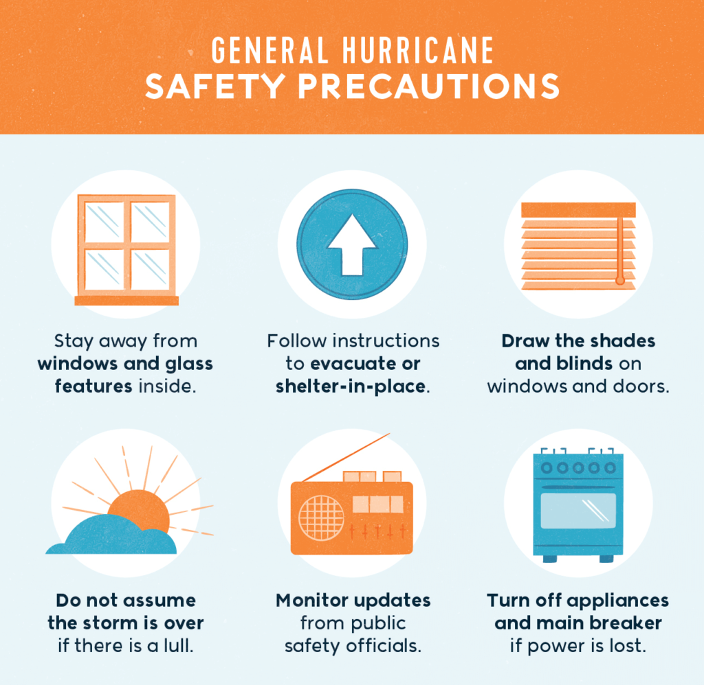

Hurricane Safety Measures
How to stay safe before, during, and after a hurricane
Home
← Back to Hurricane

Before a Hurricane
Follow weather forecasts and official warnings.
Prepare an emergency kit (water, food, flashlight, batteries).
Secure windows and doors.
Know evacuation routes in your area.
Charge your phone and power banks.
During a Hurricane
Stay indoors and away from windows.
Do not go outside during strong winds.
Turn off electricity if flooding begins.
Follow instructions from local authorities.
After a Hurricane
Avoid flood water and damaged buildings.
Stay away from fallen power lines.
Listen to official updates before returning home.
Call emergency services if needed (112 in Turkey).